Works on water was an intervention at Gesellschaft für Aktuelle Kunst Bremen. It brought together a multitude of artworks that were to be released into the open sea.
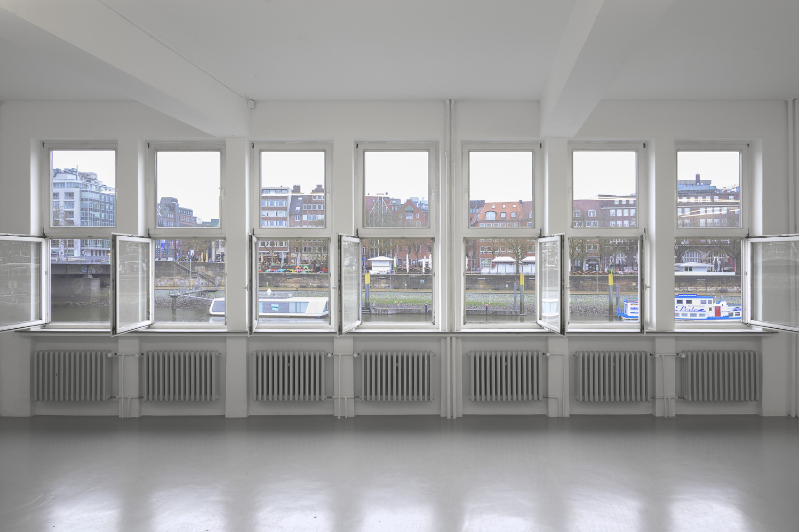
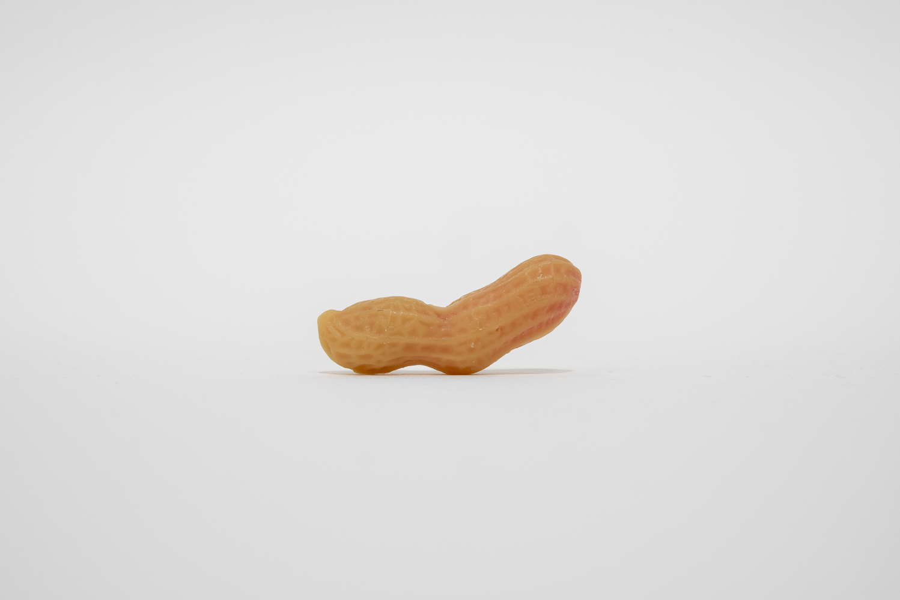
Silke Stock: harp,harp (Abguss Dreierdnuß (krumm)), 2026
Wax, 5,7 x 1,6 x 2,1cm
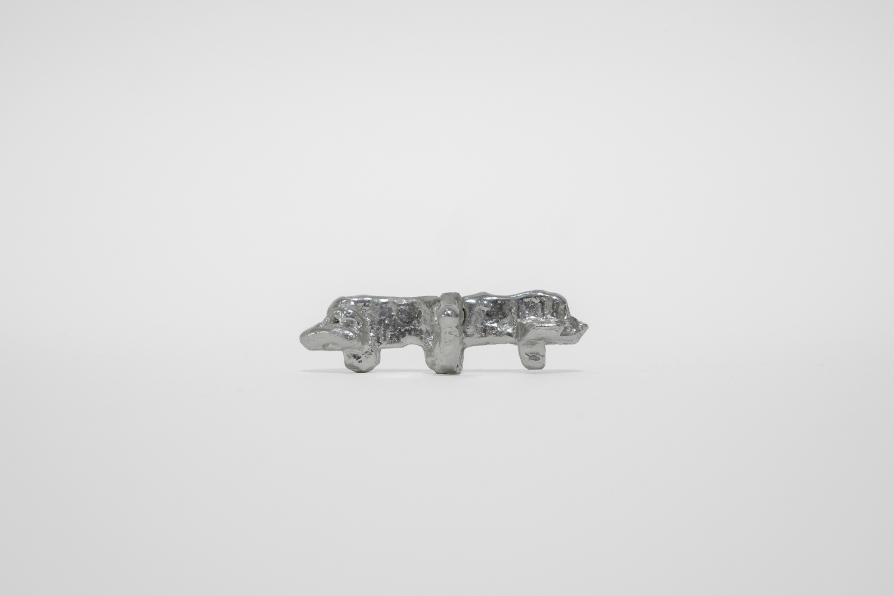
Hazel Meggie Zander: Untitled, 2026
Tin, 7 x 1 x 1cm
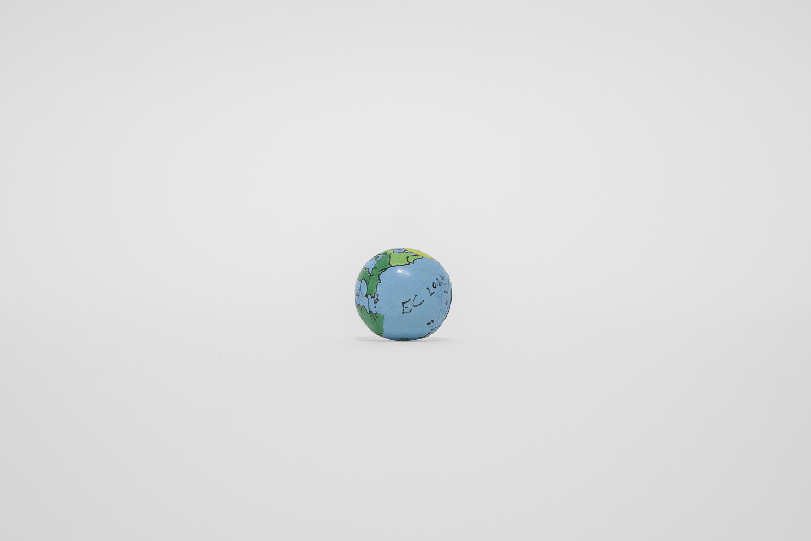
Ernst Caramelle: 2 Welten, 2026
Chocolate, foil, 1:1

Silke Stock: harp,harp (Magnet), 2026
Magnet, 0,8 x 0,8 x 0,8cm
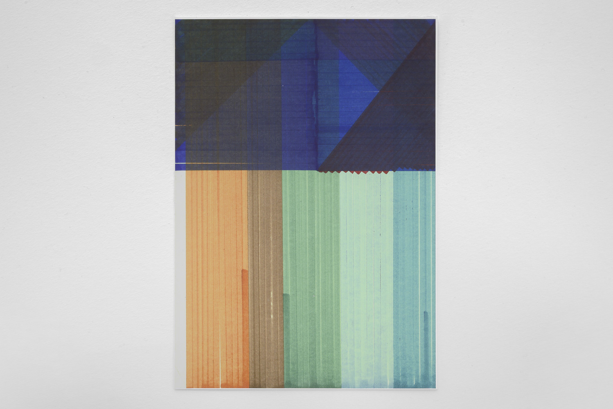
Veronika Saly: Untitled, 2026
Digital print on paper, 21 x 29,7cm
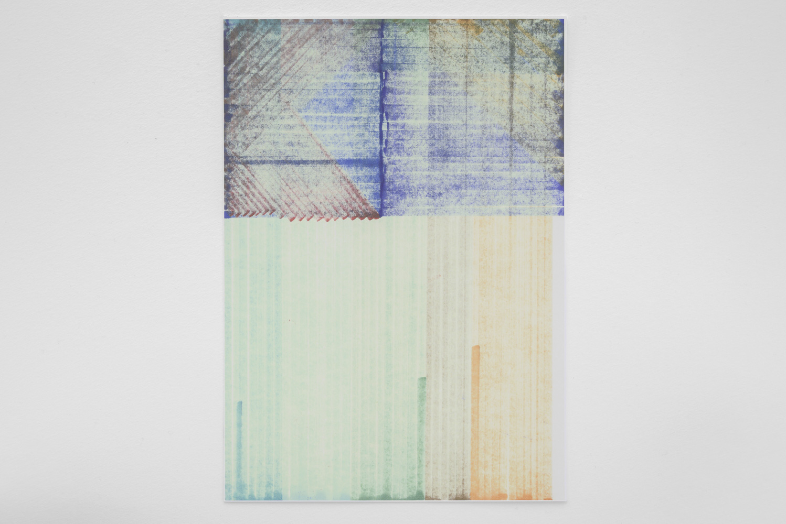
Veronika Saly: Untitled, 2026
Digital print on paper, 21 x 29,7cm
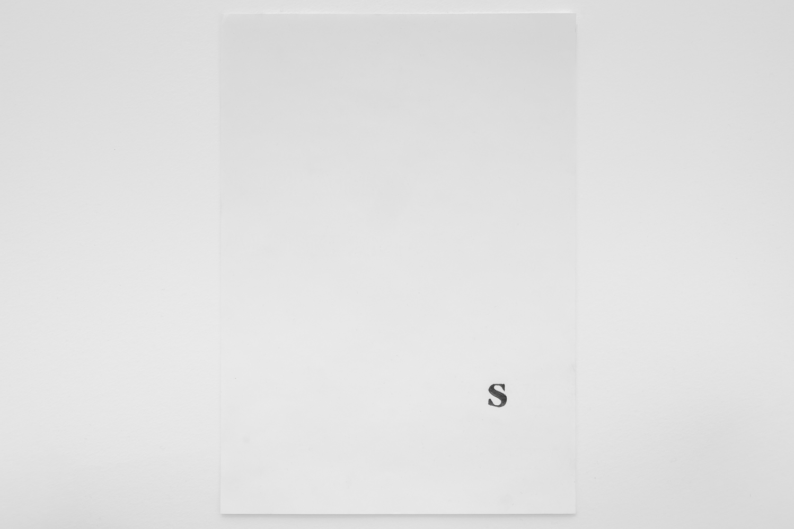
Simon Persson: Untitled, 2026
Graphite on paper, 21 x 29,1cm

Danièle Huillet & Jean-Marie Straub: A page from the director‘s book of the lm Class Relations, 1984
Digital print on waterpoof paper, 21 x 29,7cm. Copyright: Belva Film

Gvantsa Jgushia: Telkemi Formula, 2022
Ink on paper, 15 x 21cm
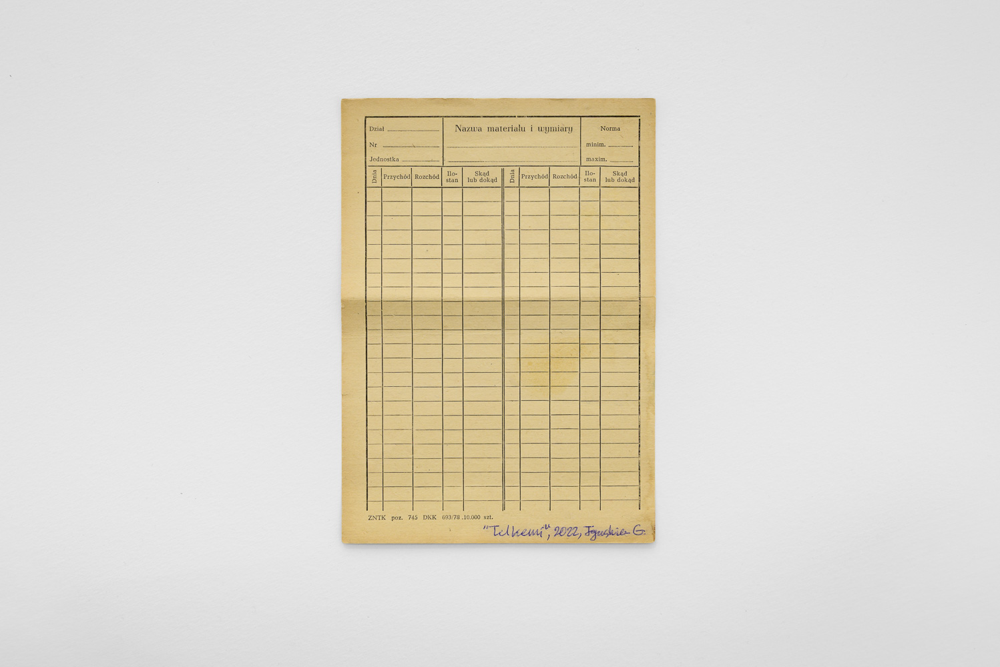
Gvantsa Jgushia: Telkemi Formula, 2022
Ink on paper, 15 x 21cm
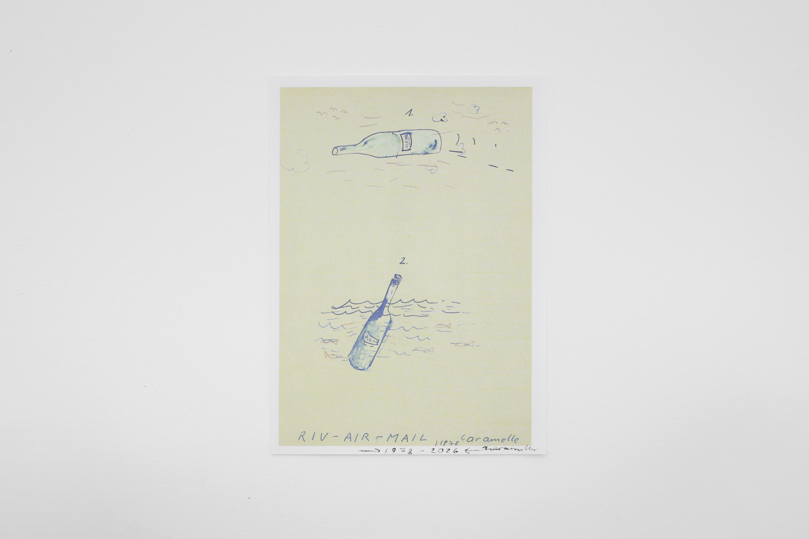
Ernst Caramelle: RIV-AIR-MAIL, 1978-2026
Digital print, ink , 16 x 22,1cm
Manuel Sékou: trigger, 2026
Audio on USB-drive, 16min 38sec

Rafael Jörger: o.T., 2026
Digital print on offset paper, 44,4 x 10,5cm (Folded: 7,4 x 10,5cm)
Sam Marshall Lockyer: Championship, 2025
Audio on USB-drive, 10min 17sec
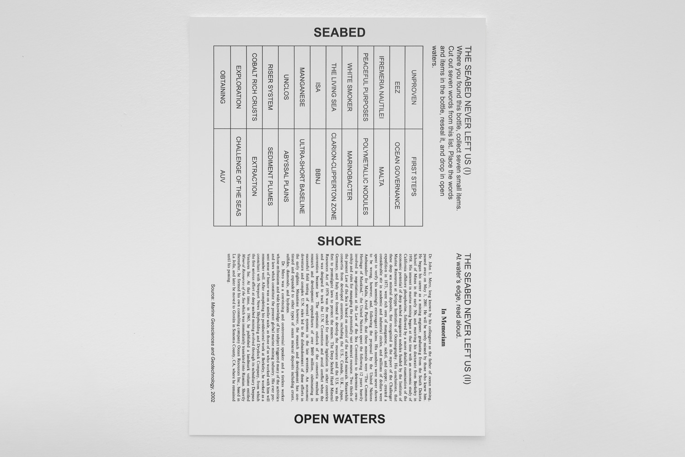
Amy Balkin: THE SEABED NEVER LEFT US, 2026
Digital print on waterpooof waterpooof paper, paper 21 x 29,7cm

Silke Stock: harp,harp (p.s. Flasche), 2026
Glass, 21,7 x 5,4 x 5,4cm
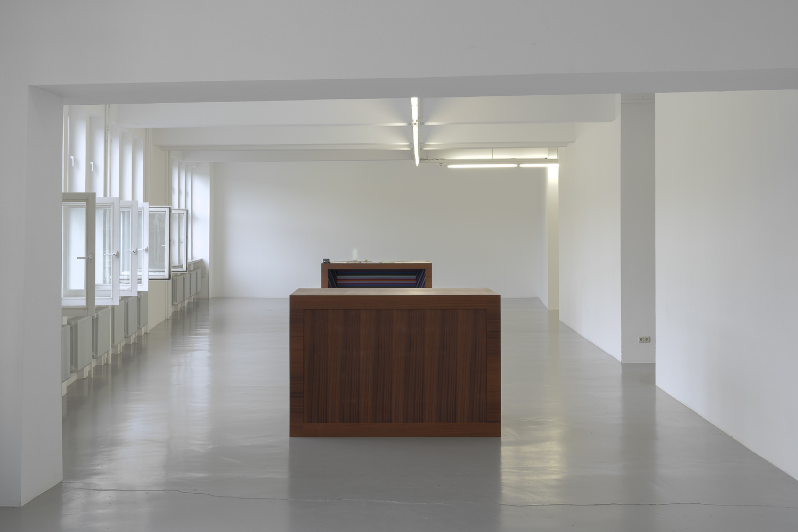
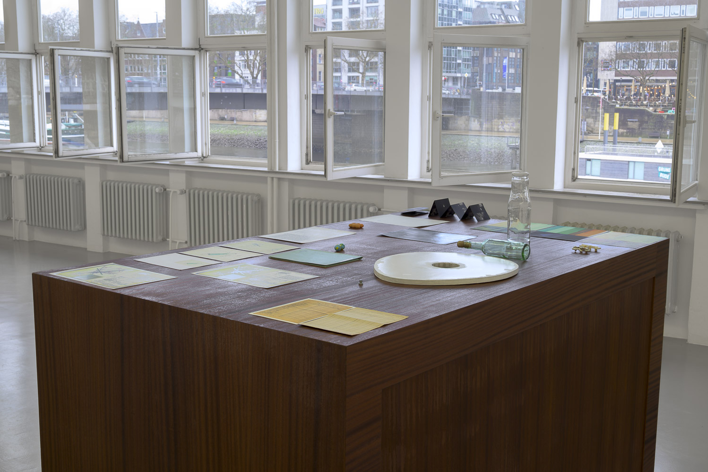

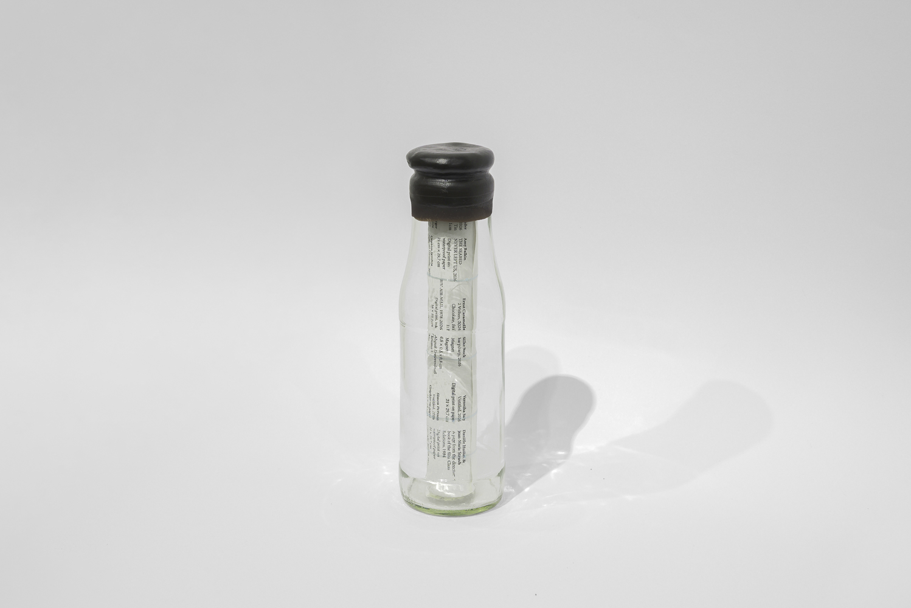
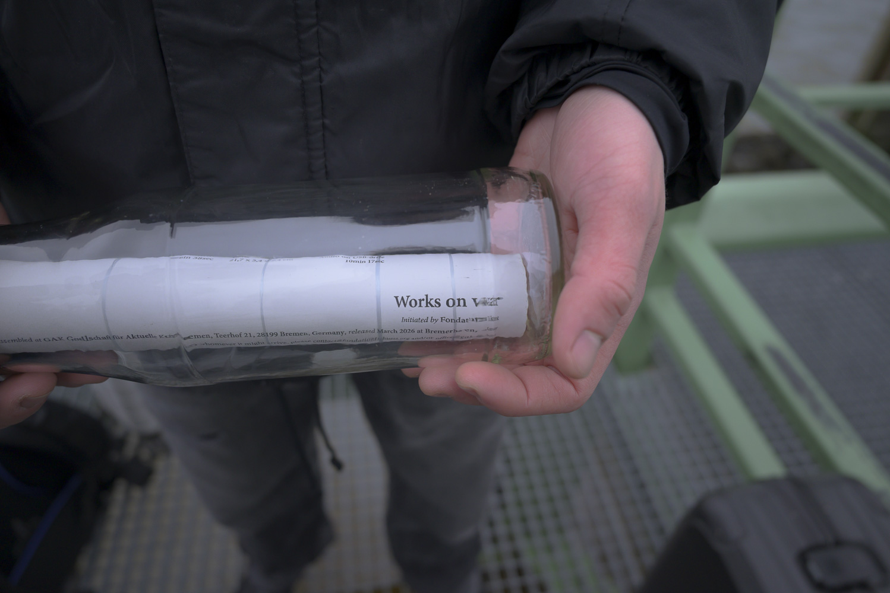
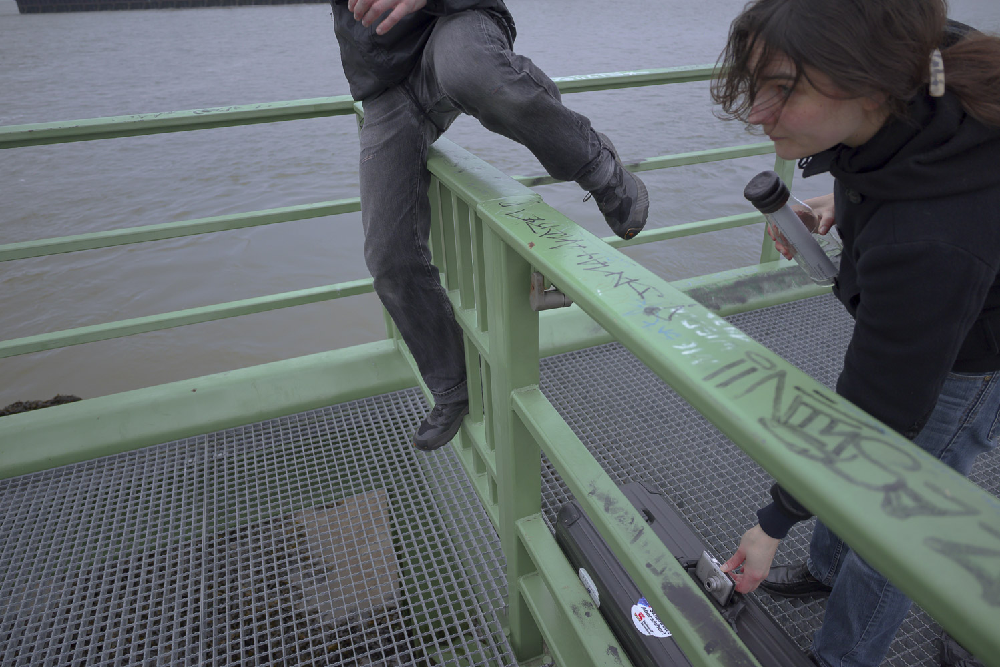